Muévete como te gusta
Registra tus deportes y duración. Si tienes datos en el reloj, puedes escribirlos o subir una captura; revisas los valores antes de guardarlos.
FÚTBOL · PÁDEL · NATACIÓN · Y MÁSEntiende tu ritmo y reconoce cuánto has avanzado desde donde empezaste. Registra tus deportes, descanso y hábitos; puedes escribir los datos del reloj o subir una captura para revisarlos.
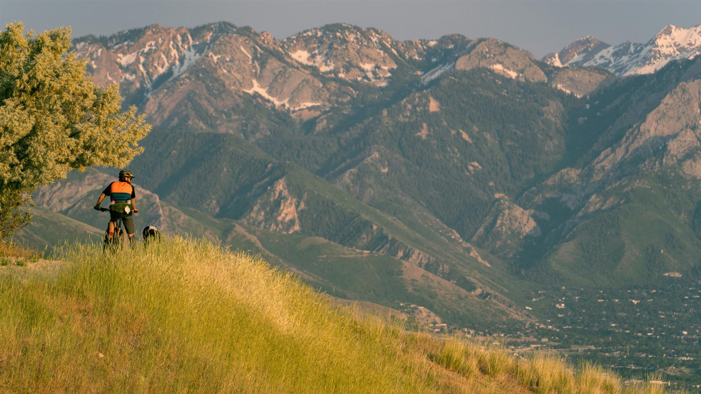
No buscamos que le ganes a nadie. Queremos ayudarte a entender tu propio punto de partida y a encontrar un ritmo que te acerque, paso a paso, a lo que quieres lograr.
Registra tus deportes y duración. Si tienes datos en el reloj, puedes escribirlos o subir una captura; revisas los valores antes de guardarlos.
FÚTBOL · PÁDEL · NATACIÓN · Y MÁSAnota tu descanso, energía y hábitos de alimentación para entender mejor cómo te sientes.
DESCANSO · COMIDA · BIENESTARSi tus registros sugieren que te vendría bien recuperar, bajar el ritmo o retomar poco a poco, te lo explicamos con claridad. También reconocemos tus avances.
UNA IDEA SENCILLA · CON SU MOTIVOCompara tus semanas con tu propio punto de partida. La meta es avanzar a tu manera, no alcanzar la marca de otra persona.
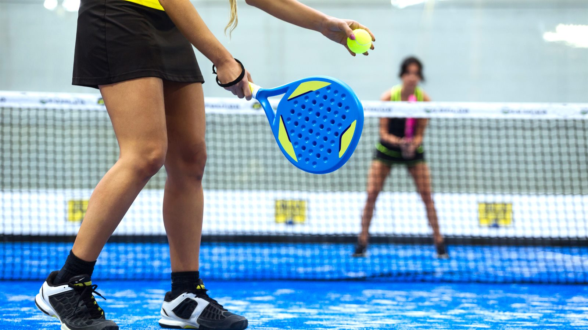
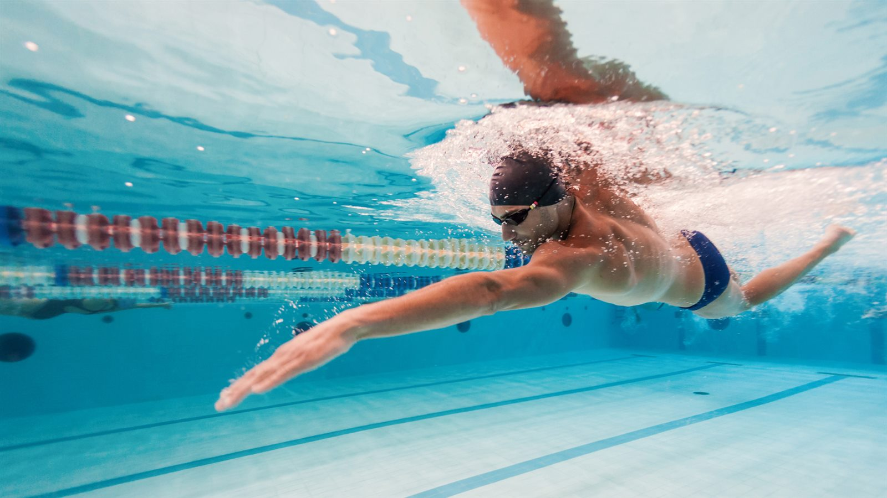
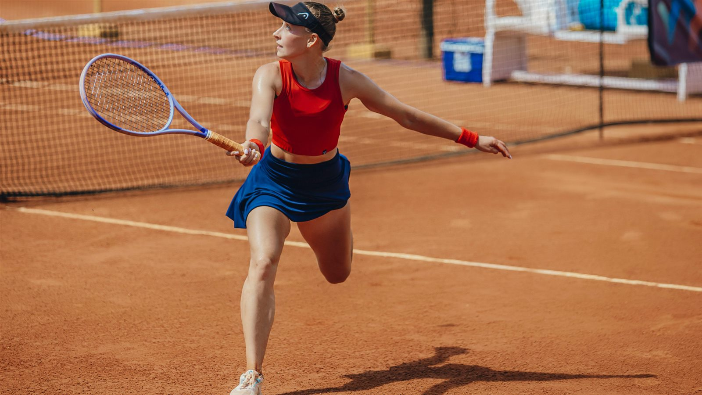
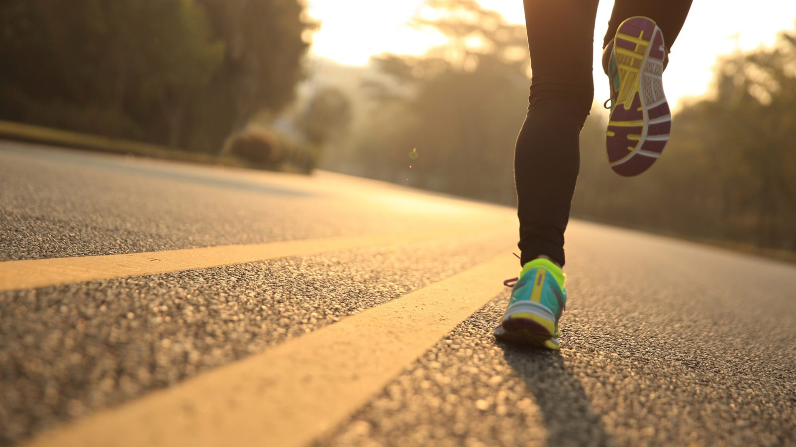
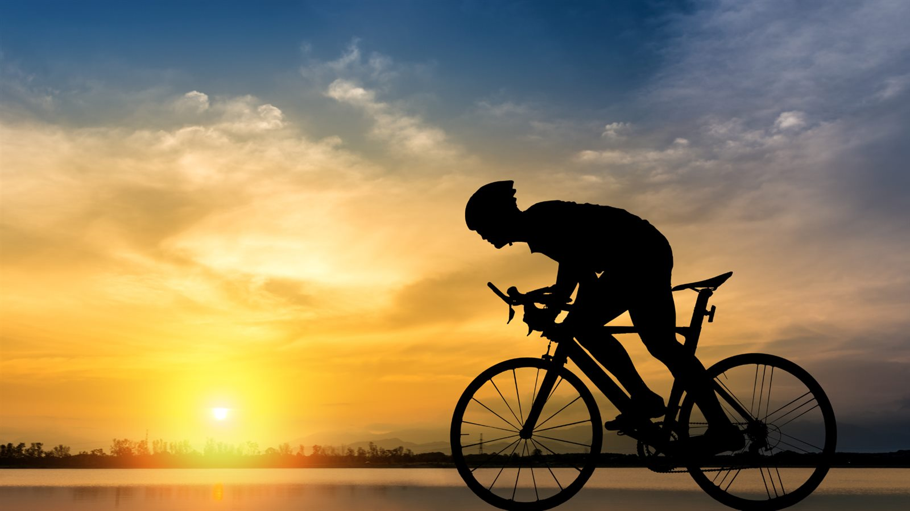
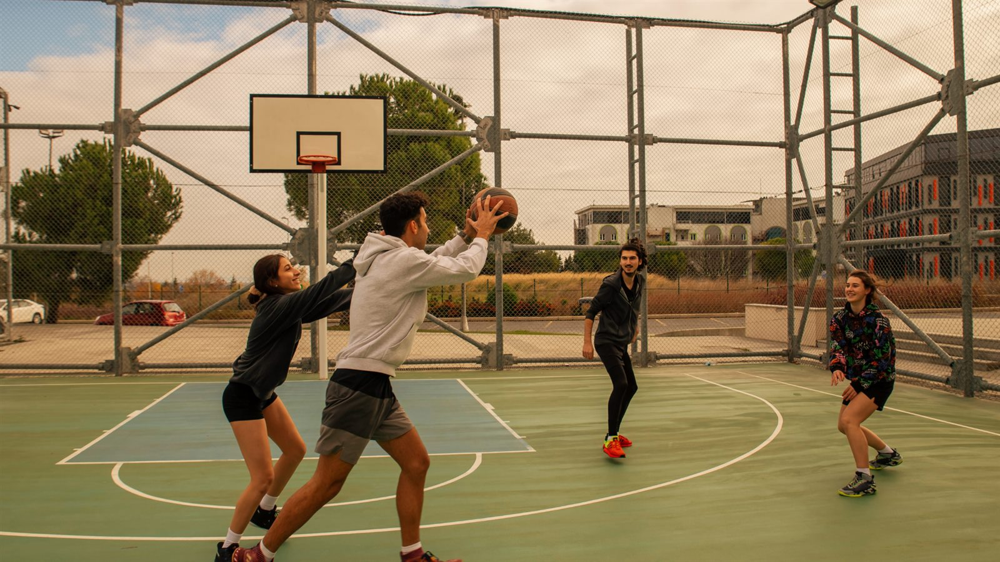
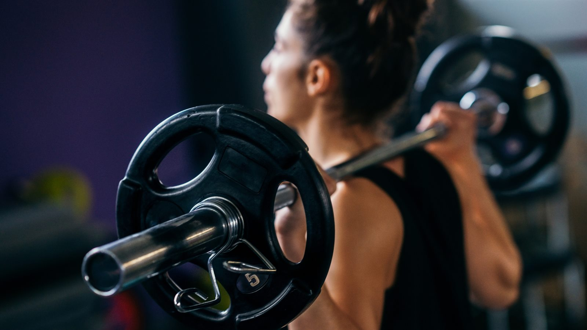
El progreso no siempre viene de hacer más. Al registrar actividad, descanso y sensaciones, podemos sugerirte cuándo mantener tu ritmo, cuándo suavizarlo y cuándo darte espacio para recuperar.
Prueba el Nivel 1 →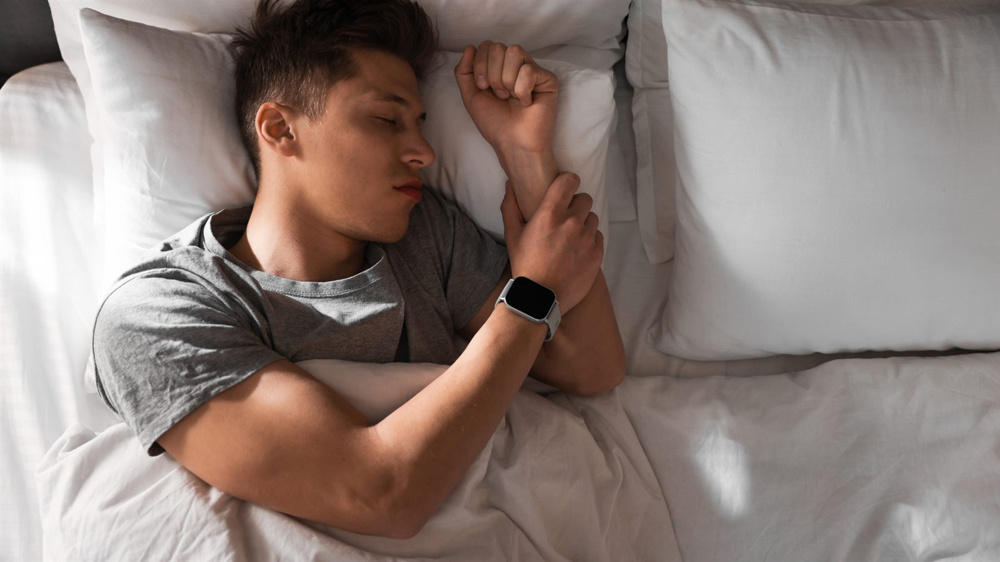
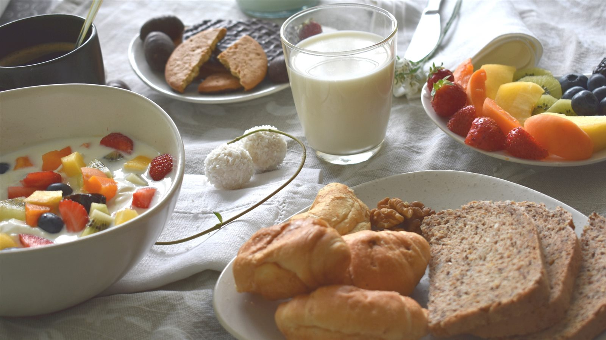
Te invitamos a observar qué comes y cómo te sientes: energía, hambre, saciedad y recuperación. Valoramos alimentos poco procesados, proteína suficiente, grasas presentes en alimentos y carbohidratos elegidos según tu actividad y respuesta personal. Sin contar calorías ni juzgar.
Durante el piloto, si el reloj todavía no está conectado, puedes subir una captura, revisar los valores y confirmarlos. También puedes escribirlos a mano. Cada sugerencia explica qué señales tomó en cuenta.
Crea tu espacio →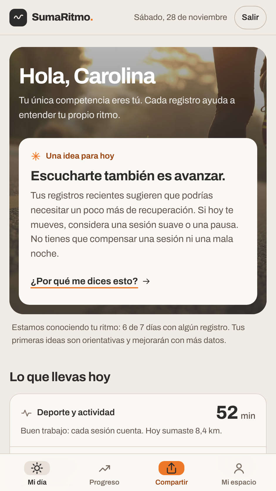
Registra un día, escucha tu cuerpo y encuentra un paso que te acerque a tu propio objetivo.
Probar el Nivel 1 →Acceso piloto sin cobro. Orientación general; no sustituye atención profesional.